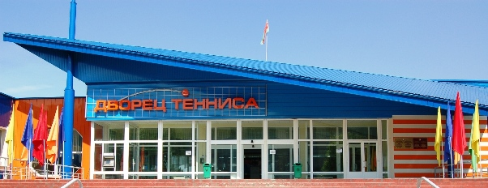

Дворец тенниса
Здание Дворца тенниса введено в эксплуатацию в 1978 году (проект архитекторов С. Ботковского, Л. Гельфанда). В 1996 году на базе Дворца тенниса и Республиканской специализированной детско-юношеской школы олимпийского резерва был создан Республиканский центр олимпийской подготовки по теннису и настольному теннису. С 2007 года – учреждение «Республиканский центр олимпийской подготовки по теннису».
В настоящее время в здании Центра тенниса размещены четыре теннисных корта с синтетическим покрытием типа «Хард» и трибунами для зрителей на 500 мест, разминочный зал, вспомогательные помещения для спортсменов и зрителей, вестибюль, сауны, тренажерный зал, административные помещения.
На прилегающей территории размещены 16 открытых теннисных кортов, в том числе – 5 открытых грунтовых кортов, 6 кортов с искусственной травой, два блока по два теннисных корта с синтетическим покрытием типа «Хард», а также демонстрационный корт с синтетическим покрытием типа «Хард» и трибунами для зрителей на 1235 мест, предназначенный для проведения теннисных соревнований и возможностью их теле-трансляции, вспомогательный корпус для занимающихся.
Спорткомплекс располагает системой освещения для проведения занятий в вечернее время, двумя стационарными информационными табло на демонстрационном корте и 5 мобильными табло, а также системой озвучивания и видео-наблюдения.
В Центре тенниса работают опытные педагоги, инструктора и тренеры, высококвалифицированные медицинские работники и массажисты. Спортивные объекты Центра оснащены новейшим оборудованием и спортинвентарем, соответствующим мировым стандартам.
Центр тенниса – не только основная площадка для подготовки профессиональных спортсменов, но и отличное место для досуга и отдыха.
К услугам посетителей предлагаются крытые и открытые теннисные корты с различными покрытиями («хард», «грунт», «трава»), тренажерный зал, разминочный зал, сауна, комнаты отдыха. В Центре тенниса расположен кафе-бар «Теннис ланч». Клиентам предоставляется бесплатная парковка.
Одним из новых видов услуг, предоставляемых в Центре тенниса, стали платные группы обучения теннису для детей 6-8 лет. С начинающими теннисистами работают лучшие молодые тренеры Центра тенниса.